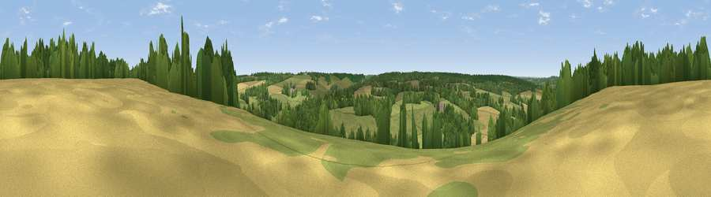

Viewpoint near Petham
#41205 in England · top 75% of its area beats it · near PethamWhere it is
The exact computed spot (TR 12675 53425). Click the marker for map links.
The view, rendered

A 360° render of this exact spot computed from the terrain model, tree cover and land cover — summer colours, afternoon light, calibrated against photographs of famous viewpoints. Real trees, hedges and buildings will differ in detail.
The panorama
Grey silhouette: terrain skyline in each direction (720 bearings, Earth curvature and refraction included). Dashed green: skyline with trees (+15 m) and buildings (+8 m) as obstacles. Blue strip: how far the ground is visible on each bearing.
Where the view opens
Wedge length = distance to the farthest visible ground on that bearing (vegetation-aware). Rings at 10, 25 and 50 km.
What fills the view
48% grassland · 28% woodland · 24% cropland ·
Angular shares of the visible panorama (visual magnitude), not map area. Landscape diversity 0.47 (0–1 Shannon).
Key numbers
More beautiful places nearby
The staircase of upgrades: each row has a higher view potential than everything closer. Driving times are estimates from straight-line distance, calibrated against real road routing — check an actual route before setting out.
| Place | Direction | Drive | Score |
|---|---|---|---|
| Viewpoint near Chartham | WNW · 2 km | ~4 min | 25.1 |
| Viewpoint near Chilham | W · 4 km | ~10 min | 31.1 |
| Viewpoint near Crundale | SW · 5 km | ~11 min | 36.2 |
| Viewpoint near Broad Oak | NNE · 8 km | ~16 min | 41.6 |
| Viewpoint near Shottenden | WNW · 8 km | ~17 min | 60.2 |
| Viewpoint near Wye | SW · 9 km | ~17 min | 70.9 |
| Viewpoint near Brabourne | SSW · 11 km | ~21 min | 71.6 |
| Viewpoint near Brabourne | SSW · 11 km | ~21 min | 71.9 |
51.24034, 1.04547 · source: screening · position refined by local search. Computed location — check access rights before visiting.